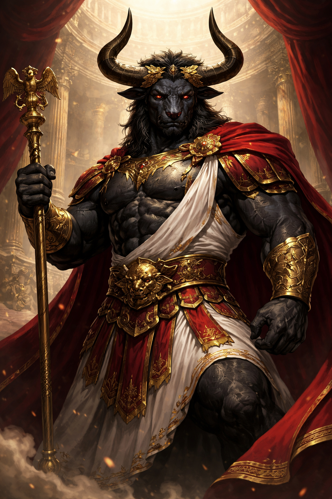
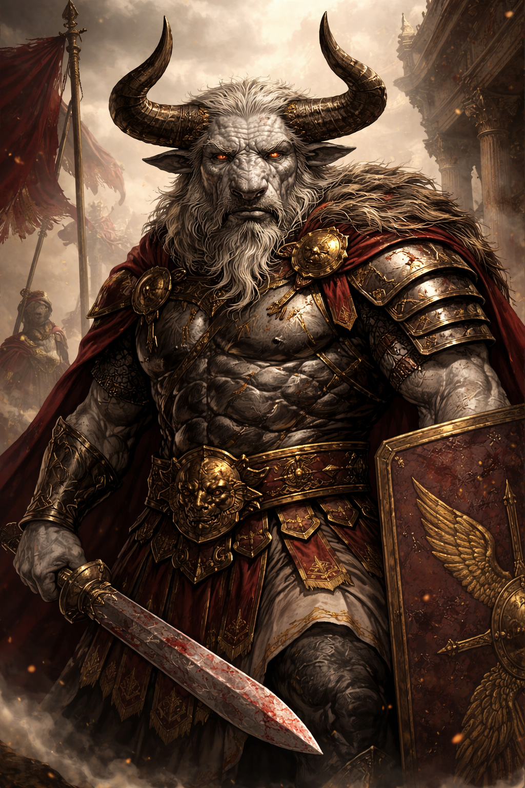

🐂 Império de Tauron
Um império forjado pela guerra e sustentado pela força.

📜 Sobre o Império
O Império de Tauron é uma potência militar dominante em Zarton, governada por minotauros que acreditam que os fortes devem governar os fracos — não apenas para dominar, mas para impor ordem.
Seu território é dividido em duas grandes regiões:
Tauron I — o coração do império
Tauron II — terras conquistadas do antigo reino élfico de Glórienn
onde antes havia beleza e harmonia, hoje existem fortalezas, disciplina e domínio militar.
A expansão faz parte da natureza do império.
🏛️ Política
O Império de Tauron é governado por um Imperador, cuja autoridade é absoluta.
A administração das cidades e territórios é feita por líderes militares — generais e comandantes que controlam regiões com base em força, lealdade e eficiência.
Tauron II, por ser um território conquistado, é administrado por um veterano de guerra, garantindo controle rígido sobre possíveis rebeliões.
A política do império é simples:
• Expandir
• Dominar
• Controlar
E qualquer resistência é rapidamente eliminada.
📍 Locais Importantes
- • Chifres — O centro do poder imperial. Uma cidade fortificada onde reside o imperador e onde são tomadas as decisões estratégicas do império.
- • Cornos — Antiga capital do reino élfico, hoje dominada pelos minotauros. O local perdeu sua antiga beleza e foi transformado em um símbolo de conquista e controle.
👥 Personagens Importantes

👑 Taurion Július Magnus
Imperador de Tauron
Imperador do Império de Tauron, Taurion governa com base na força e na ordem. Acredita que os fortes devem liderar — não apenas por conquista, mas para impor estabilidade ao mundo.
Foi responsável pela queda do antigo reino élfico, um feito histórico que consolidou seu poder.
Para seus seguidores, um símbolo de grandeza… para seus inimigos, um conquistador implacável.

⚔️ Brutus Karvek
Governador de Tauron II
Veterano do exército de Tauron, Brutus foi escolhido pelo imperador para governar o território conquistado após a queda dos elfos.
Rígido e eficiente, mantém o controle com disciplina absoluta, sempre atento a qualquer sinal de rebelião.
Não governa com crueldade… mas também não demonstra piedade.

🌿 Elandor Vaelis
Líder da Resistência Élfica
Um sobrevivente da queda de seu povo, Elandor atua nas sombras organizando uma resistência silenciosa contra o domínio minotauro.
Para os elfos, ele é esperança. Para o império, um alvo. Sua luta não é apenas por vingança… mas pela restauração de tudo que foi perdido.
Ele sabe que enfrentar Tauron exige mais do que força… exige tempo.